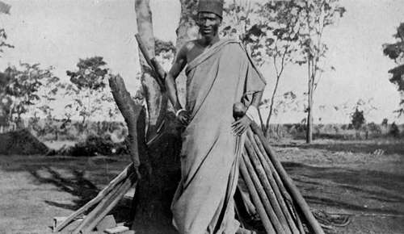

Native Characteristics, Customs, And Beliefs (Mainly Angoni). Part 2
Description
This section is from the book "Wild Life In Central Africa", by Denis D. Lyell. Also available from Amazon: Wild Life in Central Africa.
Native Characteristics, Customs, And Beliefs (Mainly Angoni). Part 2
Hyaenas which came to feed on the elephant were the dead followers of the chief who had collected to bewail his loss ; so the natives imbue the most ordinary happenings with superstitious ideas.
After an Angoni raid against an enemy, such as the Achewa tribe, the captured slaves, cattle, and other livestock, would be sent ahead, followed by the warriors chanting songs of victory. Many dances would take place, much native beer be consumed, and cattle, sheep, and goats be slaughtered for a big feast.
But if a chief had been killed, a herald was sent in front to the village, where he placed the shield of the dead warrior near the door of his hut. He walked slowly and with his head bent on his chest, and the people knew their chief was dead, and the maliro, or wake, for the departed began, and lasted for many days, according to the importance of the chief. The widows would not marry again for, perhaps, five years, and all this time they would not wash their bodies, as by doing so it was believed that they were trying to make themselves clean and beautiful, and were anxious to marry again. Cattle and goats were killed, and the widows wore strips of skin or mat round their heads and waists ; and often bark string is used as a mourning band. I have not heard that within the last hundred years any chief has been accompanied to "The Happy Hunting Grounds" by an escort of slaughtered wives and slaves, as used to be customary in parts of West Africa.
A chief's grave was often zealously watched for some months, so that body snatchers did not dig him up.
Some madmen are said to dig up bodies to get certain organs with which to manufacture witchcraft medicines, and some races in Central Africa, mainly the Anyanja and Anguru, dig up bodies to use as food, which is a loathsome and disgusting habit, and very much worse than ordinary cannibalism, when the freshly killed victims are eaten. When the Angoni raided an Achewa village, all the full-grown men and women were speared ; but the young boys and girls who could walk were spared and taken back as slaves. The poor infants would have their brains dashed out with knobkerries, then goats and other livestock would be slaughtered and eaten, and often the victors would leave a big pot simmering on a fire in a hut, filled on the top with goat's flesh and underneath it a small baby.
The people who had escaped into the bush would watch the raiders depart, then return tired and famished to their huts, and seeing the pot of good meat, would often eat most of it until they came to the bottom, where they saw the slaughtered infant—probably their own—and this was the so-called practical joke. I have spoken to natives who have done this, and they were often quiet, good-mannered men ; but when war was on they turned into bloodthirsty savages.
Many of the older men's names were given to commemorate past events, such as M'meza (or Memeza). He happened to be born when the Angoni were collecting for a big raid, and the word M'meza means sending round. This man is one of the nicest and most gentlemanly natives I ever met, there is nothing savage or coarse in his features, and he has the reputation of being a kind-hearted man who disliked shedding blood. At present -he is the headman of the Angoni villages round Fort Manning, although his nephew, named Zulu, is the Boma (Government) capitao.
Zulu's father (of the same name) was a son of old Mpseni (pronounced Impseni), the paramount Angoni chief, and Memeza is another son of the same old chief.
An Angoni chief I know well, named Shauri, is also a son of old Mpseni, and a brother to Zulu, Memeza, and Mkumbi, all mentioned here. He got his name at the-time the Angoni were preparing for a raid, and the word Shauri means sending out a party to see if the enemy is about.
Mkumbi, yet another son of Mpseni, means clouds, and he was brought into the world on a cloudy day.
The old Angoni name among themselves, and other tribes, was Mazite, and it was a dreaded word long ago in this part of Africa, for the Angoni are descended from the Zulus of Natal, probably the finest race of savages in the world, as they are splendidly built men with plenty of pluck and fighting qualities.
A part of the Zulu race split up and trekked north. Some stopped in Matabeleland and formed that nation,, which lost its paramount chief Lobengula when the whites occupied that country. Then others went farther on and crossed the Zambesi and settled in different parts of Central Africa under different chiefs.
One lot is found round Dedza, in the southern part of Central Angoniland, and they are called Ngabi's section. Another big detachment settled in the country round Fort Manning, in Nyasaland, and Fort Jameson in North-Eastern Rhodesia. This is known as Mpseni's section. Then another went farther north still, and formed Mombera's section ; and, strange to say, internecine war often was carried on between all these people who belonged to the same tribe. It is said that the Awemba in the northern parts of North-Eastern Rhodesia and the Masai, of British East Africa, are of Zulu blood, but I have not sufficient knowledge of ethnology to state whether this is so or not.
The tribal customs of the Angoni are most interesting, and these have often a great amount of common-sense intermingled with superstitions and old myths.
When the young boys and girls reach a marriageable age they marry, as do most savage races. A young girl is called a bhuto, and at the age of puberty she is known as a namwali. Long ago the men did not marry at such an early age as they do now, as their thoughts were more bent on war and a "free lance " existence. Now, as wives are sometimes scarce, they take them young.
M'Cumbi. (An old Angoni chief, son of Mpseni, the former Angoni paramount chief.)
When the Angoni had plenty of cattle, as many as twenty cows would be paid to a father for his daughter, although the usual number was from five to ten beasts.
Continue to:
- prev: Chapter X. Native Characteristics, Customs, And Beliefs (Mainly Angoni)
- Table of Contents
- next: Native Characteristics, Customs, And Beliefs (Mainly Angoni). Part 3